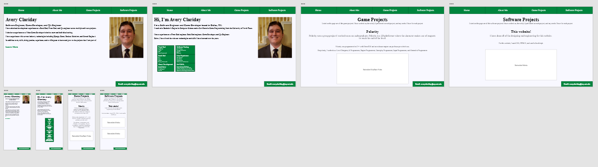

Software Projects
Listed on this page are all the software projects I have worked on, the role(s) I performed on each project, and any media I have for each project.
This website!
I have done all of the designing and engineering for this website.
For this website, I used CSS, HTML5, and vanilla JavaScript.
I also used Adobe XD to create the Sitemap, Information Architecture, and Wireframes for the website.
Project Perennial
Project Perennial was a semester-long group project that I worked on as an undergraduate. It is a web-based mobile-first application designed to assist people looking to automate home plant care.
Project Perennial was developed using Docker, CSS, HTML5, React, Django, and CouchDB.
On this project, I worked as a backend web developer and QA Engineer.
Scholarscrape
Scholarscrape was a semester-long group project that I worked on as an undergraduate. It is a website that hosted information about public scholarships that were found on the web using a scraper tool that we developed.
Scholarscrape was developed using Docker, CSS, HTML5, React, Flask, and MySQL.
On this project, I worked as a backend web developer.